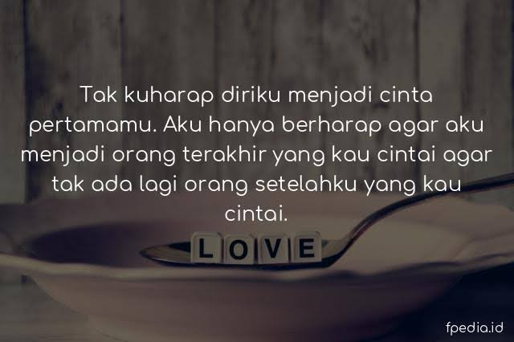

Quotes
1.
2.

3.
4.
5.
6.
Puisi
Ketulusan CintaSaat tangan itu kugenggam
merekah senyuman hangatmu di hadapku
semua cinta ada dan terasa
atas dirimu yang beri aku bahagia
‘Ketika ketulusan cinta itu hadir tanpa pamrih,
senyuman dan tawa yang kau berikan.
Aku bersyukur Tuhan telah mempertemukan kita
semua rasa yang terpendam,
rindu atas dirimu yang buatku indah
kau sapa aku dengan senyum hangat
buat sisa hari ini menjadi hari yang terindah…’.
Diam
Setiap mengingatmu:
silam terbagi goda
kita bertukar diam dalam pelukan.
Cinta
Cinta….
Siapa dia?
Hadirnya penuh tanya
Cinta….
Tersenyum ku dalam sebuah renungan
Dapat ku dengar suara hati kecilku
Bernyanyi menyenandungkan irama degup jantungku
Menari ku dalam hamparan impian
Cinta…
Ketika mata ini mampu menatapnya lebih tajam
Ketika bibir ini mampu berucap kasih untuknya
Ketika telinga ini mampu mendengarkan suara indahnya
Ketika kaki ini mampu melangkah lebih kokoh untuknya
Cinta…
hatiku berteriak ku cinta padanya
Cinta…
Ketahuilah..dia adalah kamu. Kamu yang ku cinta
warna-warna baru dalam hidupku
Menyinari hari-hariku bersamamu
Kau jantung hatiku
Kau pengobar semangat hidupku
Kau keindahan penyejuk mataku
Percayakan hatimu untukku..
Kan ku jaga, bahagiakan slalu
Karna kaulah cintaku
Aku Ingin Tahu
Aku sangat suka membayangkan menjadi matamu.
Mengetahui apa saja yang ingin dan tak ingin kau lihat.
Belajar bagaimana caramu memandang sesuatu.
Mengetahui warna apa saja yang kau suka.
Sesekali merasakan bagaimana caramu bersedih.
Bagaimana caramu agar tetap terlihat kuat.
Aku ingin memahami rasanya menjadi matamu.
Lalu mengerti apa yang kau rasakan saat menatapku.
Tips Percintaan
Updates
Tentang Cinta
Ragu jika dia sedang berbohong padamu? Tenang, ini beberapa
tanda yang dapat menunjukkan jika pasanganmu mungkin
saja sedang berbohong.
17
Apr
Tips percintaan untuk kalian yang sedang LDR
Simak yuk! Nih, beberapa tips buat kamu yang sedang menjalani hubungan LDR.
27
Mar
Quotes
Kelak akan kau temukan bahwa perpisahan hanyalah sebuah jalan untuk kembali dipertemukan.
05
Mar
Tanda-tanda yang bisa menunjukkan jika pacar kamu berbohong
Simak yuk! Nih, beberapa tanda-tanda yang bisa menunjukkan jika pasangan kamu berbohong.
Cinta yang nyata
Cinta itu tidak seperti dongeng yang endingnya selalu bahagia, percintaan tentu akan selalu terdapat halangan dan rintangan yang menghambat. jadi tetap semangat menjalani hubungan percintaan
Jalinan Kasih
Terus jaga hubungan percintaan sampai ke jenjang pernikahan. jangan pernah mengecewakan pasangan Anda dengan hal-hal yang menyakitkan.